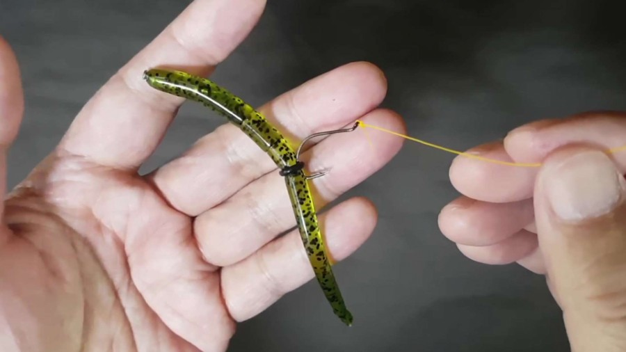

배스낚시에 사용하는 낚싯대는 매우 특화되어 있다.
사용하는 루어나 구사하는 기법에 따라 상당히 세분되어 있는 점이 다른 어종의 낚싯대와 구분되는 사항이다.
한 가지 물고기를 낚는데 이토록 여러 가지 낚싯대를 사용하는가에 놀랄 수도 있겠지만,
그만큼 배스낚시는 다양하게 즐길 수 있다.
배스낚시의 채비는 실로 다양하다. 가볍고 가는 채비에서부터 무겁고 굵은 낚싯줄로 만들어진 채비까지,
똑같이 배스를 낚기 위한 채비라고는 생각하지 못할 정도이다.
웜을 사용한다면 텍사스 리그, 스플릿샷 리그, 와키 리그 등등 웜으로 하는 기본 채비 방법 전부가 응용된다.
사실 웜을 이용한 채비 자체가 배스낚시로 인해 고안된 것이다.
첫번째로 네꼬리그용 웜을 구입하시고
두번째로 인스턴 싱커를 웜에 끼워 넣고
마지막으로 링을 웜에 고무링을 웜에 넣으시면 됩니다
카이젤리그도 와키리그와 비슷해보이지만 초기엔 지그헤드를 사용하여 만들어진걸로 알고있습니다
지금은 카이젤리그도 유명하다보니 전용 훅이 판매되고있습니다.
국내 프로님이 처음 이 카이젤리그를 만드셨다고 들었습니다
카이젤리그도 채비 방법도 와키리그와 마찬가지로 O링을 이용하거나 웜에 바로 꽂아 사용합니다.